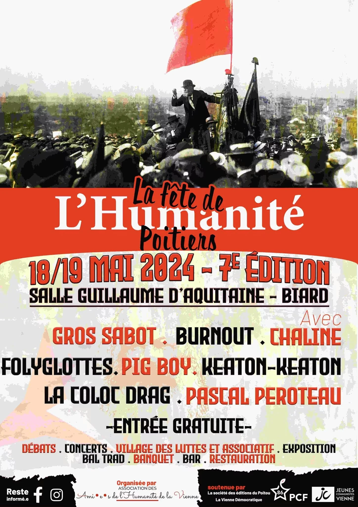
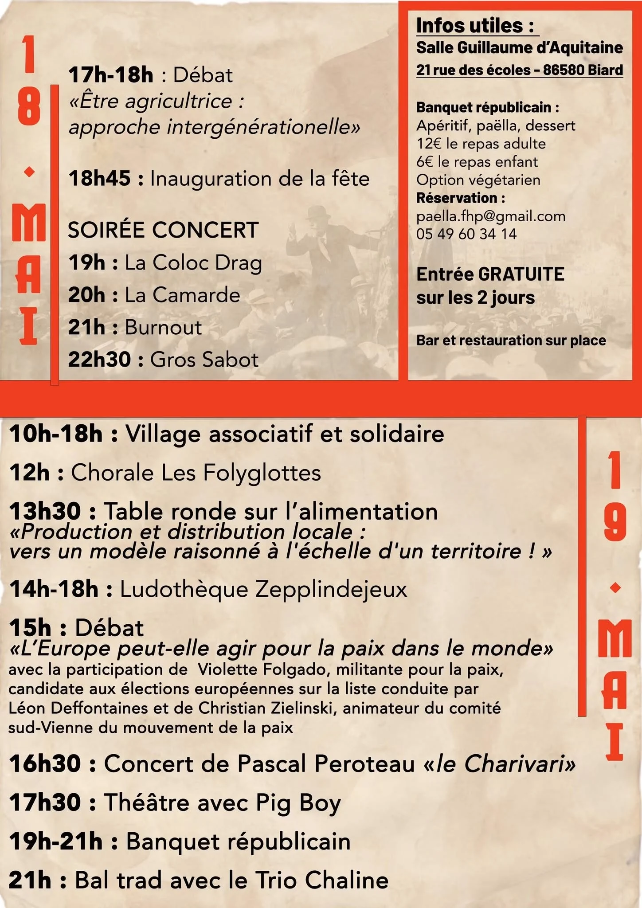

Publication relayée par le PCF 79
La Fête de l’Humanité de Poitiers annoncée à Biard
Date de mise à jour indiquée par Facebook · 9 mai 2024
Texte de la publication · PCF de la Vienne
Après avoir été virée de la Maison des Projets par le maire de Buxerolles la Fête de l'Humanité de Poitiers a atterri à Biard. Ce sera les 18-19 mai. Pour la paëlla le dimanche (suivie du bal trad) il vaut mieux s'inscrire (à paella.fhp@gmail.com). Le programme :


Sources
PCF de la Vienne · publication relayée par le PCF 79 · bibliothèque Facebook · AR-0002-FB-01396
À lire aussi · Pass culture, non à la punition collective ! · Le lien d’origine